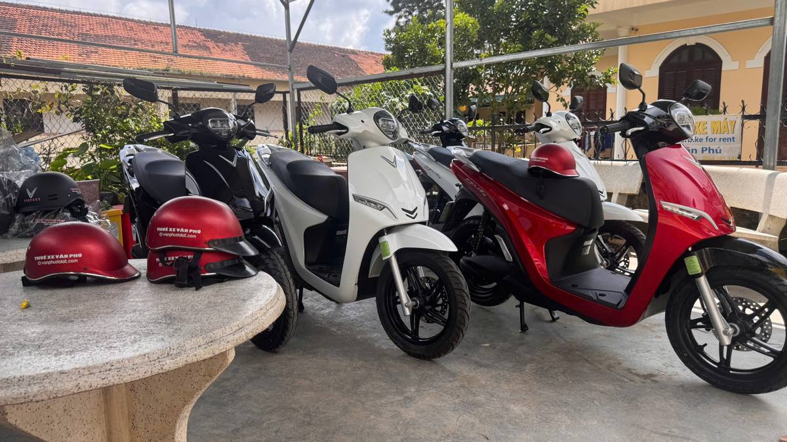
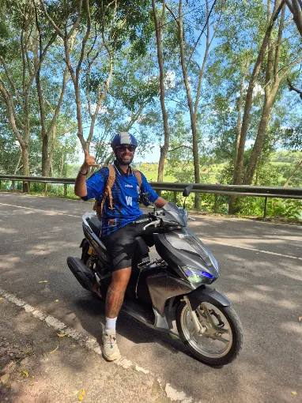
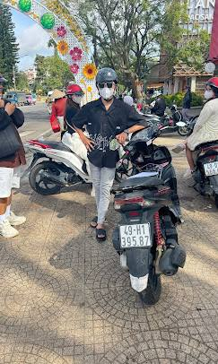

Harga sewa motosikal di Da Lat
| Motosikal | Harga sehari |
|---|---|
| Honda Vision 110cc | 150,000 ₫ |
| Honda Air Blade 125cc | 150,000 ₫ |
| Skuter elektrik | 150,000 ₫ |
Satu hari sewaan dikira dari masa ambil hingga 9:00 malam. Topi keledar percuma. Tiada caj tersembunyi.
Syarat sewaan
- Tiada deposit wang — hanya tinggalkan pasport atau kad pengenalan sepanjang tempoh sewaan.
- Bayar dahulu — bayaran sewa penuh dibuat semasa mengambil motosikal.
- Hantar ke hotel percuma — ke hotel di pusat bandar Da Lat untuk sewaan 2 hari ke atas.
- Termasuk topi keledar — untuk setiap motosikal.
- Pemegang telefon + 1 liter minyak — setiap motosikal ada pemegang telefon; motosikal petrol diberi 1 liter minyak, cukup ke stesen minyak terdekat.
- Cuba tunggang dan video — sebelum sewaan anda mencuba motosikal dan kami rakam keadaannya bersama.
- Pulangkan sebelum 9:00 malam — pada hari terakhir sewaan.
Motosikal kami
 Honda Vision 110ccSkuter automatik yang ringan. Mudah di dalam bandar dan sesuai untuk pemula.
Honda Vision 110ccSkuter automatik yang ringan. Mudah di dalam bandar dan sesuai untuk pemula. Honda Air Blade 125ccSporty dan berkuasa. Pilihan terbaik untuk bukit Da Lat dan perjalanan ke luar bandar.
Honda Air Blade 125ccSporty dan berkuasa. Pilihan terbaik untuk bukit Da Lat dan perjalanan ke luar bandar.
Skuter elektrikSenyap, lancar dan mesra alam. Sesuai untuk meneroka bandar. Sewa skuter elektrik: jarak, peraturan, soalan lazim →Cara menyewa
- Hantar mesej melalui WhatsApp, Zalo atau WeChat dengan tarikh dan nama hotel anda.
- Ambil di kedai kami atau minta dihantar ke hotel (2 hari ke atas).
- Cuba tunggang, rakam keadaan motosikal bersama, tinggalkan pasport atau kad pengenalan.
- Terokai Da Lat dan pulangkan motosikal sebelum 9:00 malam.
Peraturan sewaan
Kenapa terokai Da Lat dengan motosikal
Da Lat ialah bandar pergunungan di dataran tinggi Lang Biang dengan cuaca sejuk, hutan pain, tasik dan air terjun. Tempat menarik utama tersebar di bukit sekitar bandar dan banyak yang tiada bas. Dengan motosikal anda bebas memilih laluan, tidak bergantung pada pakej pelancongan atau teksi, dan boleh melihat lebih banyak dalam sehari.
Dalam sehari anda boleh mengelilingi pusat bandar dan Tasik Xuan Huong, kemudian ke Air Terjun Datanla dan Tasik Tuyen Lam — dan pagi esoknya menyaksikan matahari terbit di ladang teh Cau Dat. Laluan kegemaran kami ada di halaman berasingan.
Gambar




Ulasan pelanggan
Baca ulasan sebenar pelanggan kami di Google Maps — dan tinggalkan ulasan anda selepas menunggang.
📍 Peta Spot Foto Da Lat
16 spot foto tercantik di dalam dan sekitar Da Lat — dengan waktu buka, masa terbaik dan arah sekali sentuh. Tunggang sendiri dengan skuter.
Soalan lazim sewa motosikal di Da Lat
Berapa harga sewa motosikal di Da Lat?
Semua motosikal kami — Honda Vision, Honda Air Blade 125cc atau skuter elektrik — 150,000 VND sehari. Harga tetap, tiada caj tersembunyi.
Perlukah deposit wang?
Tidak. Tiada deposit wang: anda hanya tinggalkan pasport atau kad pengenalan sepanjang sewaan. Bayaran sewa dibuat penuh terlebih dahulu.
Bagaimana 1 hari sewaan dikira?
Dari masa ambil hingga 9:00 malam hari yang sama. Pulang sebelum 9:00 malam keesokan harinya dikira 2 hari, dan seterusnya.
Boleh hantar ke hotel?
Boleh. Untuk sewaan 2 hari ke atas, kami hantar motosikal percuma ke hotel di pusat bandar Da Lat.
Apa yang termasuk dalam sewaan?
Setiap motosikal disertakan topi keledar dan pemegang telefon percuma, dan skuter petrol diserahkan dengan 1 liter minyak.
Motosikal mana yang patut dipilih?
Untuk bandar dan perjalanan dekat, Honda Vision dan skuter elektrik ringan dan senyap. Untuk bukit dan ke luar bandar, seperti ladang teh Cau Dat, pilih Honda Air Blade 125cc — lebih berkuasa ketika mendaki.
Boleh tempah awal?
Boleh. Hantar tarikh dan nama hotel melalui WhatsApp, Zalo atau WeChat, kami akan sahkan dan sediakan motosikal.
Di mana kedai?
Van Phu terletak di 1/15/5 Thông Thiên Học, Da Lat. Lokasinya ada di Google Maps — lihat peta di bawah.
Panduan melancong Da Lat
Lokasi kami
Ada soalan tentang Da Lat?
Kami boleh bantu tentang laluan, cuaca dan tempahan motosikal — hantar mesej melalui WhatsApp.
Mesej di WhatsAppHubungi kami
WhatsApp: +84 944 081 101 · +84 834 622 149
Zalo: 0944 081 101
Telegram: @vanphudalat
WeChat: vanphudalat
Facebook: facebook.com/vanphudalat
Alamat: 1/15/5 Thông Thiên Học, Da Lat, Vietnam